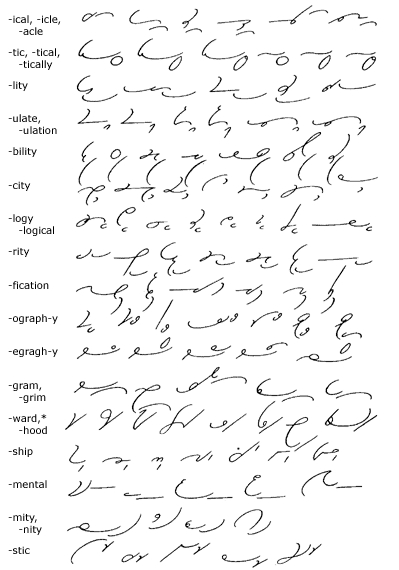
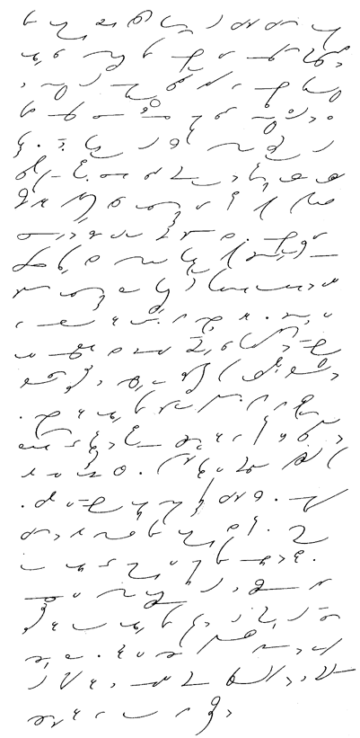

Unit 32
Analogical Word-Endings—Disjoined
230.
In most of the disjoined word-endings the vowel preceding
the ending is understood, as in art(i)cle, barn(a)cle,
dom(e)stic, cal(a)mity, extr(e)mity,
auth(o)rity, sec(u)rity:

*In the words forward,
afterward, upward, and backward, the
suffix is joined; while it is disjoined in other words.
231. Key
to Analogical Word-Endings
1. article, practical, physical,
musical, medical, technical.
2. politic, political, politically, critic,
critical, critically.
3. personality, locality, formality, facility,
utility.
4. formulate, formulation, speculate, speculation,
regulate, regulation.
5. possibility, ability, sensibility, nobility,
reliability, adaptability, visibility.
6. capacity, simplicity, ferocity, tenacity,
scarcity, sagacity, electricity.
7. psychology, apology, analogy, physiology,
theology, zoology, genealogy, mineralogy.
8. authority, majority, prosperity, security,
sincerity, popularity, minority.
9. classification, specification, modification,
notification, qualification, justification.
10. phonograph, photography, geography, lithography,
stenography, typography, typographic.
11. telegraph, telegraphy, telegrapher, telegraphic,
calligraphy.
12. telegram, cablegram, radiogram, pilgrim,
program.
13. forward, afterward, upward, backward,
reward, boyhood, neighborhood, childhood.
14. friendship, kinship, worship, courtship,
hardship, township, partnership.
15. fundamental, ornamental, supplemental,
experimental, temperamental.
16. calamity, extremity, serenity, divinity.
17. domestic, artistic, drastic, elastic,
fantastic.
232. Reading
and Dictation Practice
